16/01/2022 — Suy hô hấp cấp: Đọc đúng các dấu hiệu trên điện tâm đồ ban đầu và các điện tâm đồ liên tiếp, kèm xử trí tích cực, có thể đã cứu được tính mạng bệnh nhân
Bản dịch tiếng Việt của bài "Acute respiratory distress: Correct interpretation of the initial and serial ECG findings, with aggressive management, might have saved his life." – Dr. Smith’s ECG Blog. Giữ nguyên toàn bộ 20 hình ảnh của bản gốc.
Bài viết của Pendell Meyers, Smith biên tập
LƯU Ý: Mời xem Bình luận của tôi ở cuối bài này — trong đó tôi mở rộng phần bàn luận của Dr. Meyers & Dr. Smith về một số dấu hiệu điện tâm đồ tinh tế nhưng quan trọng trên điện tâm đồ ban đầu — Ken Grauer, MD —
Một người đàn ông 60 mấy tuổi gọi đội cấp cứu ngoài viện (EMS), có vẻ vì khó thở. EMS thấy ông trong tình trạng suy hô hấp và giảm oxy máu, cần thở oxy 4 L qua ống thông mũi để duy trì độ bão hòa oxy trên 93%.
Đây là điện tâm đồ lúc phân loại (triage) của ông:

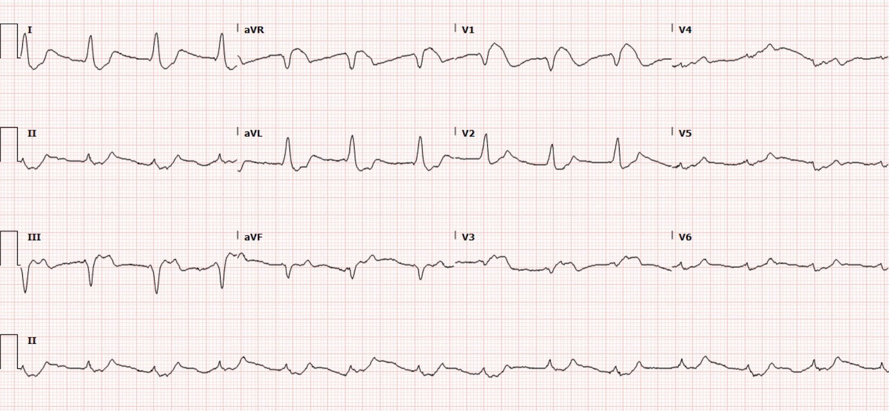
Trong hồ sơ có một điện tâm đồ cũ, từ 2 năm trước:

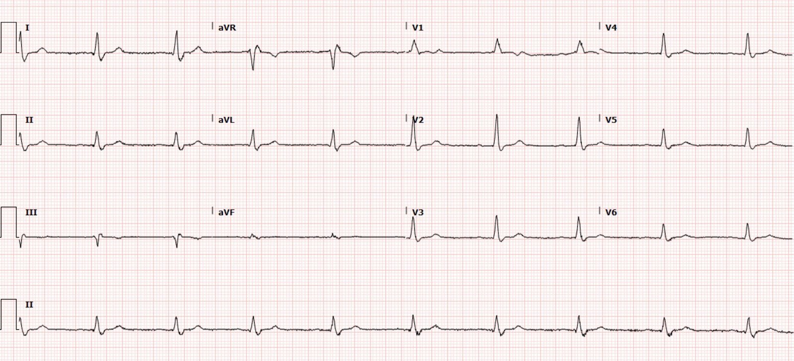
Điện tâm đồ lúc phân loại có giá trị chẩn đoán tăng kali máu đe dọa tính mạng (chẹn kênh natri cũng có thể tạo ra hình ảnh này, nhưng không ghi nhận bệnh nhân dùng bất kỳ thuốc chẹn kênh natri nào). Có hình ảnh giả STEMI dạng Brugada rất thường gặp ở V1, và một phần ở V3 và aVR. Cũng có ST chênh lên (STE) ở III kèm ST chênh xuống (STD) soi gương ở I và aVL, do tăng kali máu gây ra.
Theo kinh nghiệm của tôi, khi tăng kali máu gây hình ảnh giả STEMI, các vùng hay gặp hình thái ST chênh lên dương tính giả nhất là, theo thứ tự: chuyển đạo trước tim phải (do hình thái Brugada), chuyển đạo thành dưới (như thấy ở đây), rồi đến chuyển đạo bên cao. Trên blog có rất nhiều ca như vậy, xem các link bên dưới.
Điện tâm đồ này dễ với những ai đã được dạy về hình ảnh tăng kali máu này, và gần như không thể hiểu được với những ai chưa được dạy.
Đáng tiếc, các bác sĩ đã đọc điện tâm đồ này là “STEMI” và kích hoạt phòng thông tim (cath lab). Bác sĩ can thiệp gọi cho bác sĩ khoa cấp cứu (ED) và hoàn toàn đồng ý rằng điện tâm đồ thể hiện STEMI. Tuy nhiên, họ thông báo với nhóm khoa cấp cứu rằng thể trạng bệnh nhân không phù hợp về mặt vật lý với bàn thông tim, nên không thể thông tim được. Thay vào đó, bác sĩ can thiệp đề nghị dùng thuốc tiêu sợi huyết.
Tenecteplase được dùng ngay lập tức.
Lúc này, bệnh nhân vẫn suy hô hấp; ông được thở máy áp lực dương không xâm nhập, ý thức còn tỉnh táo.
Ngay sau đó, các xét nghiệm ban đầu có kết quả:
K (kali) 8.3 mEq/L
Na (natri) 125 mEq/L
Creatinin 9.41 mg/dL
Troponin I độ nhạy cao có kết quả 6 ng/L (giới hạn trên tham chiếu (URL) bách phân vị 99% ở nam giới là dưới 20 ng/L)
Bệnh nhân được dùng 10 mg albuterol khí dung, 2 gm calci gluconat tĩnh mạch, 10 U insulin thường, D50, và 50 mEq natri bicarbonat.
Bình luận của Meyers: tất cả đều là điều trị ban đầu hợp lý, ngoại trừ việc 2 gm calci gluconat sẽ không đủ. Hãy nhớ rằng liều ban đầu “bình thường” của CaCl là 1 gm, chứa lượng calci nguyên tố bằng 3 gm calci gluconat. Bạn phải lập tức đánh giá lại độ rộng QRS và hình thái chung, rồi tiếp tục cho thêm calci cho đến khi chuẩn độ được về QRS bình thường và không còn hình thái Brugada rõ rệt. Xem các ca bên dưới, trong đó chúng tôi đã phải dùng lượng calci khổng lồ mỗi 20 phút để giữ bệnh nhân không ngừng tim và có QRS chấp nhận được, tổng cộng lên tới 24 g calci gluconat (hay 8 g CaCl), và dùng nhiều hơn nữa KHÔNG phải là chống chỉ định, nếu cần.
Bệnh nhân bắt đầu được chuyển tới trung tâm tuyến cuối có các chuyên khoa tim mạch, thận học và hồi sức tích cực (ICU).
Ông cần thở máy áp lực dương không xâm nhập liên tục để hỗ trợ hô hấp.
Bổ sung norepinephrine liều thấp vì hạ huyết áp.
Ngay trước khi chuyển tới cơ sở tuyến cuối, khoảng 2 giờ sau lúc nhập viện ban đầu, kali được đo lại là 8.4 mEq/L.
Sau đó, ngay sau lần đo này và trước khi vận chuyển, bệnh nhân được dùng thêm một liều albuterol 10 mg, Ca gluconat 2 gm, insulin 10 U và natri bicarbonat 50 mEq.
Ông tới ICU và được ghi thêm một điện tâm đồ:

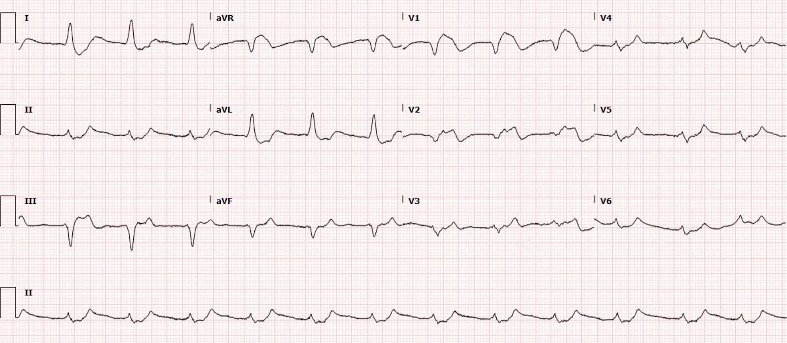
Kali được đo lại là 8.4 mEq/L. Troponin lần thứ hai có kết quả 17 ng/L (cùng xét nghiệm như trên).
Lại dùng: Ca gluconat 2gm, insulin thường 5U và natri zirconium cyclosilicat 10 gm.
2 giờ sau, điện tâm đồ gần như giống hệt, không có tiến triển gì.
Trước khi kịp đặt catheter lọc máu, bệnh nhân bị suy giảm ý thức và phải đặt nội khí quản. Ông bị ngừng tim quanh thời điểm đặt nội khí quản và không thể hồi sức thành công.
Những điểm cần học:
Sự khác biệt giữa OMI và tăng kali máu (hyperK) có thể quyết định sống chết. Nói cách khác, ghi nhớ các hình ảnh của OMI và các hình ảnh tăng kali máu giả OMI có thể cứu sống người bệnh và tránh dùng thuốc tiêu sợi huyết hay kích hoạt phòng thông tim dương tính giả.
Trách nhiệm thuộc về Y học Cấp cứu: chính chúng ta phải là người làm chủ điện tâm đồ, vì chúng ta gặp mọi bệnh nhân cấp cứu, chưa phân định, có triệu chứng hội chứng vành cấp (ACS); trong số đó ta phải nhận ra những “cây kim trong đống rơm” bị OMI, tăng kali máu, và phân biệt họ với đau ngực và khó thở lành tính, cùng đủ loại hình ảnh giả OMI (OMI mimic). Ít nhất trong mô hình ở Mỹ, bác sĩ tim mạch không gặp những bệnh nhân khác này, nên không thể có nhiều kinh nghiệm về hình ảnh giả OMI như Y học Cấp cứu.
ST chênh lên dạng Brugada (theo tôi) là hình ảnh giả OMI do tăng kali máu thường gặp nhất. Chuyển đạo thành dưới và chuyển đạo bên cao cũng đã được mô tả, như trong các ca bên dưới. Hình ảnh tăng kali máu giả OMI điển hình có sóng R lớn, kèm ST chênh lên, ở V1, V2 và aVR, với QRS rộng, cùng nhiều dấu hiệu khác.
Ngoài sóng T nhọn, tăng kali máu còn gây ra cái mà tôi gọi là những chữ B “chết người” (killer B’s) của tăng kali máu: Broad (QRS giãn rộng), Brady (nhịp chậm đủ mọi loại), Blocks (blốc AV, blốc nhánh), Brugada (hình ảnh Brugada), và Bizarre (hình thái kỳ dị, sóng hình sin, v.v.).
Không có liều calci tối đa khi bệnh nhân có nguy cơ tử vong do tăng kali máu nặng. Qua quan sát của tôi ở nhiều bác sĩ chưa có kinh nghiệm với tăng kali máu chết người, việc cho calci thường chỉ là một câu hỏi “có hay không” hay một “ô đánh dấu”. Cho một liều calci rồi chờ kết quả bảng xét nghiệm sinh hóa kế tiếp là không đủ. Bạn phải chuẩn độ calci cho đến khi đạt được QRS hẹp, không còn hình thái Brugada hay các dấu hiệu tăng kali máu rõ rệt khác.
Các ca tăng kali máu giả OMI:
“Steve, what do you think of this ECG in this Cardiac Arrest Patient?” (“Steve, bạn nghĩ gì về điện tâm đồ này ở bệnh nhân ngừng tim?”)

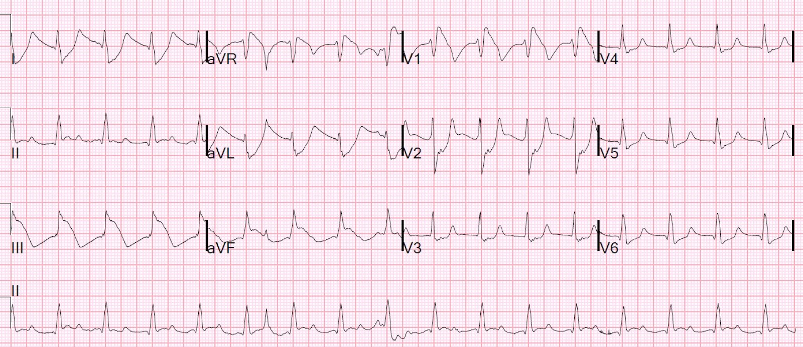
Hyperkalemia and ST Segment Elevation, Post 1 (Tăng kali máu và ST chênh lên, bài 1)

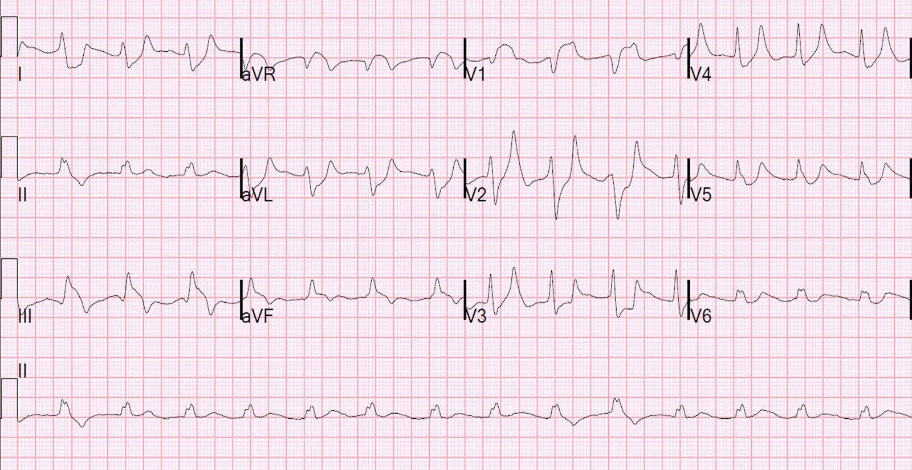
A Tragic Case, related to the last post (Một ca bi thảm, liên quan đến bài trước)

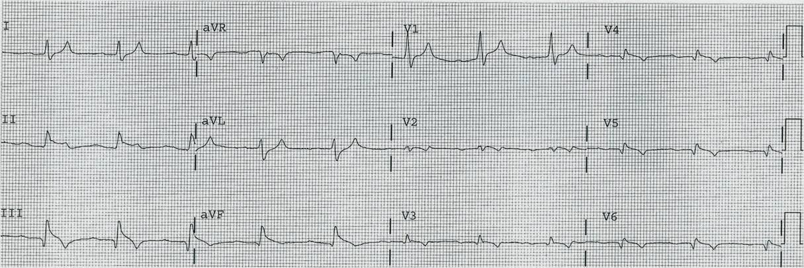
A patient with chest pain and ST Elevation in V1 and V2 (Bệnh nhân đau ngực và ST chênh lên ở V1 và V2)

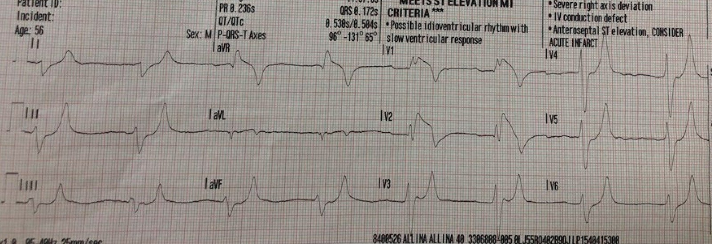
You MUST recognize this pattern, even if it is not common (Bạn PHẢI nhận ra hình ảnh này, dù nó không thường gặp)

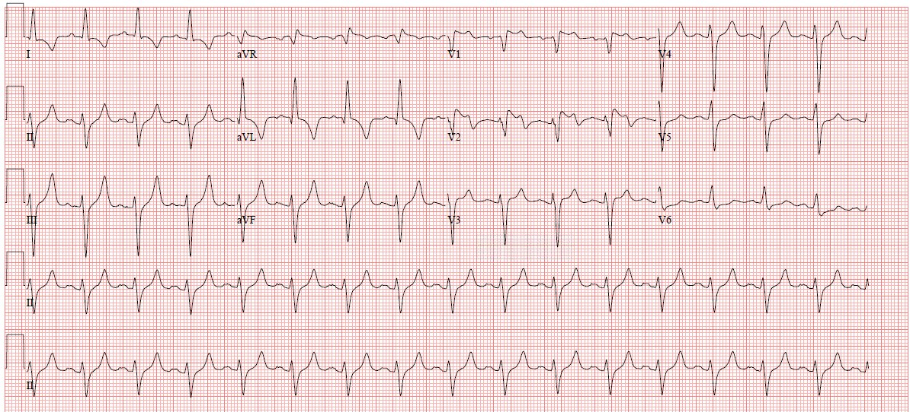
ST Elevation. What is it? (ST chênh lên. Đó là gì?)

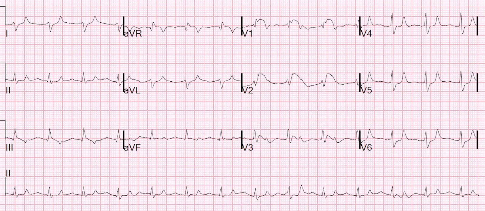
This ECG Pattern Told the Story When the Patient Could Not (Hình ảnh điện tâm đồ này đã kể lại câu chuyện khi bệnh nhân không thể)

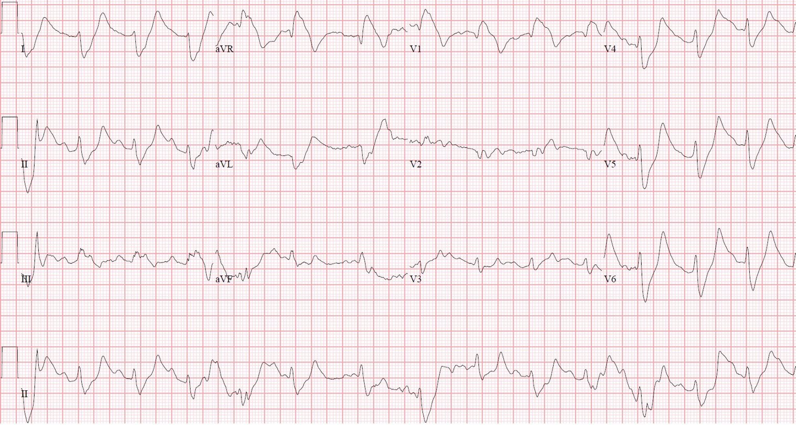
What are these ST elevations, ST depressions, and tall T waves diagnostic of? (Các ST chênh lên, ST chênh xuống và sóng T cao này có giá trị chẩn đoán điều gì?)

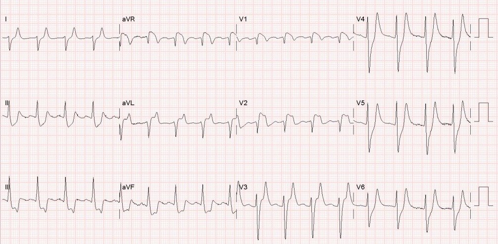
Another Shark Fin. With a twist. (Thêm một ST vây cá mập. Có một điểm bất ngờ.)

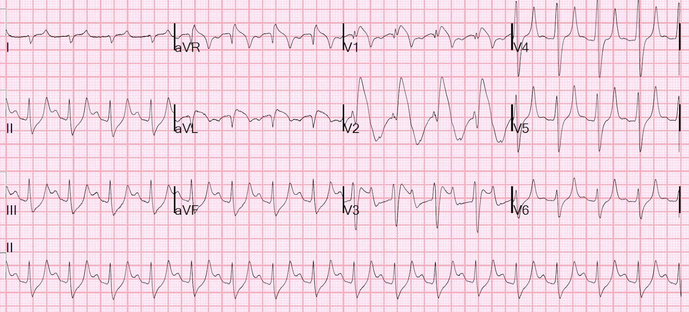
Do you recognize this ECG yet? (Bạn đã nhận ra điện tâm đồ này chưa?)

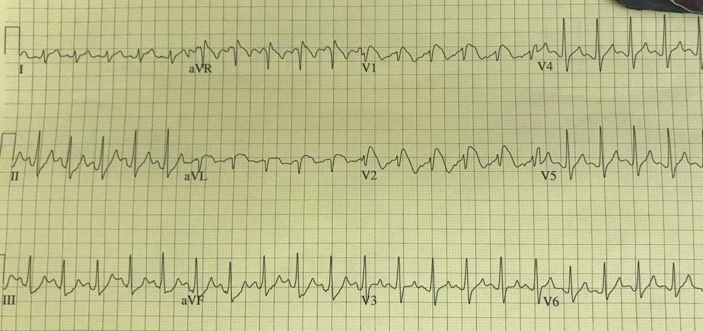
Right Bundle Branch Block with ST Elevation in V1? (Blốc nhánh phải kèm ST chênh lên ở V1?)

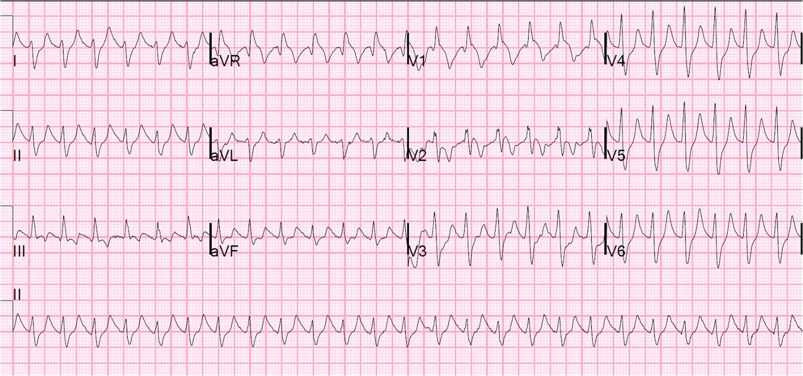
ST elevation in aVL with reciprocal ST depression in the inferior leads (ST chênh lên ở aVL kèm ST chênh xuống soi gương ở chuyển đạo thành dưới)

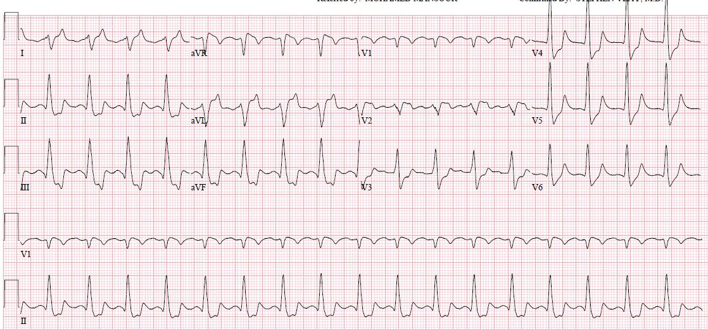
Shock, bradycardia, ST Elevation in V1 and V2. Activate the Cath Lab? (Sốc, nhịp chậm, ST chênh lên ở V1 và V2. Kích hoạt phòng thông tim?)

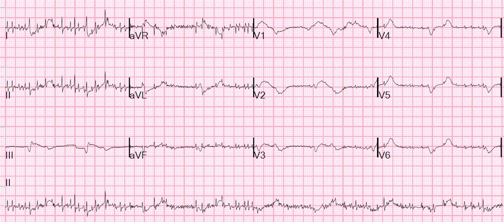
Các ca tăng kali máu nói chung:
A 50s year old man with lightheadedness and bradycardia (Người đàn ông 50 mấy tuổi bị choáng váng và nhịp chậm)
Patient with Dyspnea. You are handed a triage ECG interpreted as “normal” by the computer. (Physician also reads it as normal) (Bệnh nhân khó thở. Bạn được đưa một điện tâm đồ lúc phân loại được máy tính đọc là “bình thường”. (Bác sĩ cũng đọc là bình thường))
Severe shock, obtunded, and a diagnostic prehospital ECG. Also: How did this happen? (Sốc nặng, lơ mơ, và một điện tâm đồ trước viện có giá trị chẩn đoán. Thêm nữa: Chuyện này đã xảy ra thế nào?)
A woman with near-syncope, bradycardia, and hypotension (Người phụ nữ gần ngất, nhịp chậm và hạ huyết áp)
What happens if you do not recognize this ECG instantly? (Điều gì xảy ra nếu bạn không nhận ra điện tâm đồ này ngay lập tức?)
A woman in her 50s with dyspnea and bradycardia (Người phụ nữ 50 mấy tuổi bị khó thở và nhịp chậm)
A patient with cardiac arrest, ROSC, and right bundle branch block (RBBB). (Bệnh nhân ngừng tim, tái lập tuần hoàn tự nhiên (ROSC) và blốc nhánh phải (RBBB).)
Is this just right bundle branch block? (Đây có phải chỉ là blốc nhánh phải?)
Is This a Simple Right Bundle Branch Block? (Đây có phải là một blốc nhánh phải đơn thuần?)
A 60-something who has non-specific generalized malaise and is ill appearing. (Bệnh nhân 60 mấy tuổi mệt mỏi toàn thân không đặc hiệu và trông có vẻ bệnh nặng.)
HyperKalemia with Cardiac Arrest. (Tăng kali máu kèm ngừng tim.)
Peaked T waves: Hyperacute (STEMI) vs. Early Repolarizaton vs. Hyperkalemia (Sóng T nhọn: tối cấp (STEMI) so với tái cực sớm so với tăng kali máu)
What will you do for this altered and bradycardic patient? (Bạn sẽ làm gì cho bệnh nhân rối loạn ý thức và nhịp chậm này?)
I saw this computer “normal” ECG in a stack of ECGs I was reading (Tôi thấy điện tâm đồ “bình thường” theo máy tính này trong một xấp điện tâm đồ tôi đang đọc)
What is the diagnosis? (Chẩn đoán là gì?)
Found comatose with prehospital ECG showing “bigeminal PVCs” and “Tachycardia at a rate of 156” (Được phát hiện hôn mê, điện tâm đồ trước viện cho thấy “PVC nhịp đôi” và “nhịp nhanh tần số 156”)
An elderly woman found down with bradycardia and hypotension (Một cụ bà được phát hiện nằm gục, nhịp chậm và hạ huyết áp)
A middle aged man with unwitnessed cardiac arrest (Một người đàn ông trung niên ngừng tim không có người chứng kiến)
Test almost all of your most important ECG rhythm interpretation skills with this case. (Kiểm tra gần như mọi kỹ năng đọc nhịp điện tâm đồ quan trọng nhất của bạn với ca này.)
Sinus rhythm with a new wide complex QRS (Nhịp xoang kèm QRS rộng mới xuất hiện)
This ECG is pathognomonic and you must recognize it. (Điện tâm đồ này đặc hiệu chẩn đoán và bạn phải nhận ra nó.)
A Very Wide Complex Tachycardia. What is the Rhythm? Use Lewis Leads!! (Một nhịp nhanh QRS rất rộng. Nhịp gì? Hãy dùng chuyển đạo Lewis!!)
A Very Wide Complex (Một QRS rất rộng)
Are these peaked T-waves the patient’s baseline T-waves? (Những sóng T nhọn này có phải là sóng T nền của bệnh nhân?)
Bradycardia, SOB, in a Dialysis Patient (Nhịp chậm, khó thở, ở bệnh nhân lọc máu)
Tôi dừng ở tháng Bảy năm 2014, trước đó còn vô số bài hay khác!

===================================
BÌNH LUẬN CỦA TÔI, bởi KEN GRAUER, MD (16/1/2022):
===================================
Bài ECG Blog tuyệt vời của Dr. Meyers & Dr. Smith về một số dạng tăng kali máu đe dọa tính mạng nhưng khó nhận ra hơn.
- TẠI SAO những ca này “khó nhận ra hơn” là tăng kali máu có thể đe dọa tính mạng?
TRẢ LỜI: Vì chúng ta không thấy những sóng T rất cao, nhọn, đáy hẹp mà ta vẫn tìm kiếm …
CÂU HỎI: TẠI SAO những ca này lẽ ra phải được các nhân viên y tế cấp cứu nhận ra dễ hơn so với thực tế?
TRẢ LỜI: Vì ngoài sóng T cao, nhọn (và nhọn hoắt), đáy hẹp — còn có một loạt các dấu hiệu điện tâm đồ bổ sung cần tìm. Cho rõ ràng — tôi đã ghi chú trên điện tâm đồ ban đầu của ca hôm nay (Hình 1). Các đặc điểm của tăng kali máu đe dọa tính mạng lẽ ra phải thấy rõ trên bản ghi này gồm:
- Hình ảnh kiểu hình sao chép Brugada (Brugada phenocopy) ở chuyển đạo V1 (như Dr. Meyers và Dr. Smith đã nhấn mạnh ở trên).
- QRS giãn rộng theo dạng không giống bất kỳ dạng BBB nào đã biết.
- Hoặc sóng P cực kỳ nhỏ (các vạch dọc màu XANH trên dải nhịp DII dài ở Hình 1) — hoặc — không hề có sóng P (tức là nhịp xoang-thất (sinoventricular rhythm)).
- Sóng T nhọn tinh tế nhưng có thật (các mũi tên ĐỎ).

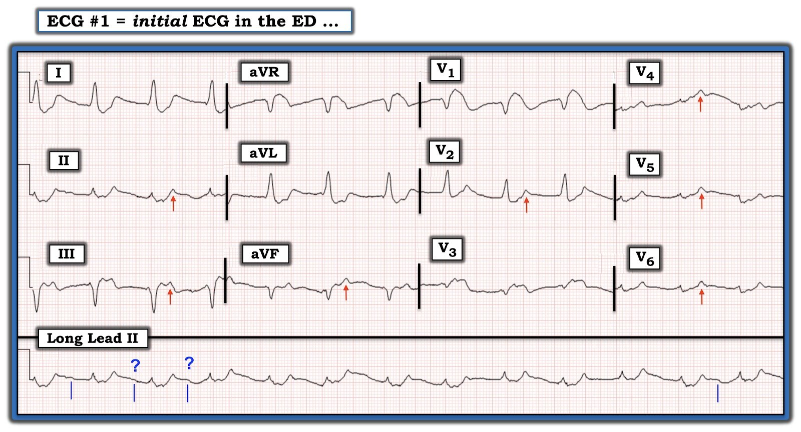
Bình luận:
Chúng ta đều biết phải tìm tăng kali máu ở những bệnh nhân có yếu tố thuận lợi mắc rối loạn điện giải này (tức là suy thận cấp hoặc mạn; toan máu nặng; dùng thuốc giữ kali; chấn thương nặng, v.v.). Việc nhận ra dễ hơn nhiều khi có một trong những tình trạng “thuận lợi” này.
- Nhưng gần như tất cả bệnh nhân mà nhân viên y tế cấp cứu gặp (tức là tại hiện trường khi gọi EMS — hoặc tại khoa cấp cứu) đều có thể bệnh rất nặng, và do đó có thể “có yếu tố thuận lợi” để bị tăng kali máu.
Vậy nhịp ở Hình 1 là GÌ?
Để nhắc lại TẠI SAO việc xác định nhịp tim có thể khó đến vậy khi có tăng kali máu đáng kể — tôi đã thêm Hình 2.
- Trong ca hôm nay — tôi hoàn toàn thừa nhận rằng tôi không biết chắc nhịp ở Hình 1 là gì. Tôi nghi rằng các vạch dọc màu XANH tôi vẽ dưới dải nhịp DII dài chỉ vị trí của các sóng P rất nhỏ với khoảng PR kéo dài — NHƯNG — cũng có thể là không có sóng P nào — khi đó đây sẽ hoặc là nhịp bộ nối hoặc là nhịp xoang-thất (sinoventricular).
- Trên thực tế — nhịp ở Hình 1 là gì thì không quan trọng — vì NẾU bệnh nhân này được điều trị bằng Calci kịp thời — dù nhịp này là gì thì rất có thể nó cũng sẽ nhanh chóng biến mất.

ĐIỀU CỐT LÕI: Tôi tin rằng cách TỐT NHẤT để không bỏ sót tăng kali máu có thể đe dọa tính mạng là: i) Luôn luôn nghĩ tới nó ở những bệnh nhân bệnh cấp tính mà bạn gặp; ii) Không chỉ tìm sóng T cao, nhọn — mà CÒN tìm:
- Nhịp chậm không giải thích được.
- Sóng P nhỏ (hoặc mất sóng P).
- Blốc AV độ 1 (thường với khoảng PR kéo dài rõ rệt).
- Các dạng blốc AV khác (thường không tuân theo các “quy luật thông thường” của blốc AV).
- QRS giãn rộng (nhất là khi hình thái QRS không theo dạng của một loại BBB đã biết).
- Trục lệch phải rõ rệt trên mặt phẳng trán không giải thích được.
- Các hình ảnh kiểu hình sao chép Brugada.
- Các dạng sóng T nhọn tinh tế hơn (tức là như thấy ở Hình 1 — trong đó tuy nhỏ và không nhọn hoắt — nhiều sóng T lại “nhọn” hơn một cách đáng ngạc nhiên so với mức bạn chờ đợi, xét theo QRS nhỏ như thế nào, và đoạn ST ngoài ra dẹt như thế nào).
Để biết THÊM về tăng kali máu:
- BẤM VÀO ĐÂY — để ôn lại trình tự “kinh điển” của các dấu hiệu điện tâm đồ khi tăng kali máu.
- BẤM VÀO ĐÂY — để nghe bản Audio dài 8 phút của tôi về các điểm then chốt (Pearls) để nhận ra tăng kali máu trên điện tâm đồ.